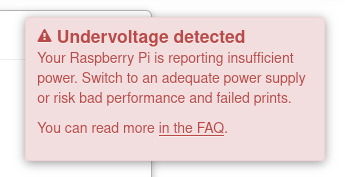

Connexion de Octoprint à l’imprimante 3D
Branchement

Votre Raspberry Pi éteinte, connectez votre micro processeur à l’imprimante 3D avec le bon câble USB. Une fois cela fait, allumez l’imprimante 3D, connectez le Pi à une source d’énergie et allumez-le.
Vous pouvez vous munir d'un écran à brancher via HDMI avec le Pi pour suivre l'application de toutes les configurations faites. Pour une première fois, cela peut prendre un peu de temps mais après ce sera beaucoup plus rapide. Vous savez que l'opération est terminée lorsque vous voyez un prompt qui vous invite à vous connecter.
Accès à Octoprint
Après un démarrage réussi, connectez vous via n'importe quel navigateur mais sur le réseau qui a été configuré avec OctoPi. Pour accéder a l'interface web d'Octoprint, vous pouvez utiliser une de ces 2 URLs:
http://[nom].local/ avec nom, le nom d'hote que vous auriez mis lors de l'installation de l'image de OctoPi
http://[ip] avec ip, l'adresse ip de la raspberry
Configuration des paramètres

Les principaux paramètres incluent:
Le controle d'accès
Vous devez y renseigner le nom d'utilisateur et le mot de passe nécessaires pour se connecter à l'interface web d'Octoprint.
Le suivi anonyme de l’utilisation
Vous décidez si vous souhaitez qu'OctoPrint collecte de manière anonyme ou non des données de votre part.
Vérification de la connectivité en ligne
La liste noire de plugins
Vous pouvez sélectionner certains plugins que vous mettrez dans votre liste noire.
La configuration du profil de l'imprimante
Vous devez mettre un nom pour votre imprimante et renseigner les valeurs correspondantes à votre imprimante.
Les commandes du serveur
Vous pouvez configurer les commandes du serveur qu’OctoPrint prendra en charge.
Les enregistrements par webcam et en accéléré
Vous pouvez configurer les paramètres de votre webcam et mettre en place des enregistrements en accéléré. Des lors, des que vous cliquez sur "Next" ou "Suivant", vous tomberez sur la page d'Octoprint en elle meme.
Connexion
Au niveau des paramètres en haut à gauche, cochez les cases "Save connection settings" et "Auto-connect on server startup". Laissez "Serial Port" et "Baudrate" définis sur AUTO. Cliquez ensuite sur "Connect" et c'est bon.
Vous n'aurez à faire cette étape qu'une fois. Toutes les autres fois, votre imprimante sera connectée à moins que vous vous soyez déconnecter. Par ailleurs, vous devez faire très attention aux warnings qui apparaitront sur la page de connexion.
NB
Undervoltage Problem

Si vous avez une erreur du type Undervoltage detected, il s'agit du fait que votre raspberry recoit une tension inférieur à celle dont elle a besoin et cela peut affecter la qualité de vos impressions. De ce fait, je vous recommande de, soit changer le chargeur de votre raspberry (car inadéquat), soit relier l'alimentation de votre raspberry pi à celle de votre imprimante tout en vous assurant dans les 2 cas qu'une tension d'au moins 5V est delivrée a la raspberry.
Firmware Problem

Si vous avez une erreur du type Firmware Broken, cela indique un problème au niveau du protocole de communication entre ton imprimante 3D et Octoprint. Néanmoins, cela peut etre réglé avec l'installation du plugin Creality-2x-temperature-reporting-fix Pour l'installation du plugin :
Allez dans les paramètres en cliquant sur l'icone en forme de clé

Cliquez sur Plugin Manager sous OCTOPRINT puis sur Get more

Entrez Creality-2x-temperature-reporting-fix au niveau de la barre de recherche puis sur Install

Suivez ensuite les instructions pour redémarrer Octoprint